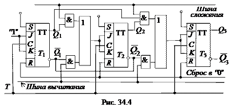

4. РЕВЕРСИВНЫЙ СИНХРОННЫЙ СЧЁТЧИК
Реверсивный счётчик, фрагмент которого изображен на рис. 34.4, работает как на сложение, так и на вычитание. Для перехода от сложения к вычитанию и обратно изменяют подключение входа последующего триггера к выходам предыдущего.

На объединённые входы J и К каждого триггера подаётся через
дизъюнкторы конъюнкция сигналов с выходов предыдущих триггеров: основные выходы
предыдущих триггеров присоединяются через конъюнкторы верхнего ряда (при
сложении), а инверсные выводы - через конъюнкторы нижнего ряда (при вычитании). При
сложении подают 1 на шину сложения, которой вводятся в действие конъюнкторы
верхнего ряда; при этом на шине вычитания присутствует 0, вследствие чего
конъюнкторы нижнего ряда выключены. Вычитание осуществляется при подаче 1 на
шину вычитания и 0 на шину сложения. Счетные импульсы поступают на вход Т.
Как отмечалось в п. 2, каждый триггер переключается по тактовому входу С при J = К = 1, что имеет место, когда на выходах всех предыдущих триггеров (на основных – при сложении, на инверсных – при вычитании) будут единицы. Функционирование счетчика при сложении и вычитании описано в п. 2 и в п. 3.